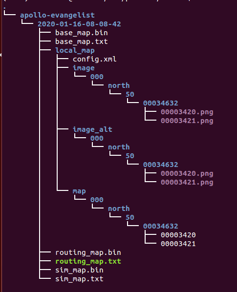

封闭园区自动驾驶搭建--虚拟车道线制作#
前提条件#
百度云对象存储BOS注册#
注册方法参考百度云对象存储BOS注册与基本使用向导
开通云服务账号#
请与商务部门联系开通云服务账号，需要提供上一步骤中注册的Bucket名称、所属地域
主要步骤#
虚拟车道线数据包录制#
将想要自动驾驶的区域提前按要求录制数据包，作为后面生成虚拟车道线的输入数据。
- 需要的channel信息如下所示：
| 序号 | topic |
|---|---|
| 1 | /apollo/localization/pose |
| 2 | /apollo/sensor/gnss/odometry |
| 3 | /apollo/sensor/gnss/ins_stat |
| 4 | /apollo/sensor/lidar16/compensator/PointCloud2 |
为获取上述channel，需要启动GPS、Localization、Velodyne三个模块，GPS、Localization模块的启动请参考定位模块配置文档，Velodyne模块的启动请参考感知传感器集成文档。由于GNSS设备的限制，/apollo/sensor/gnss/odometry、/apollo/sensor/gnss/ins_stat这两个channel不能由GNSS设备直接给出，需要借助/apollo/modules/tools/sensor_calibration/下的两个脚本工具。在localization模块正常启动且输出/apollo/localization/pose数据时，在不同终端分别执行python modules/tools/sensor_calibration/ins_stat_publisher.py、python modules/tools/sensor_calibration/odom_publisher.py两个命令，便可以分别产生/apollo/sensor/gnss/ins_stat、/apollo/sensor/gnss/odometry这两个channel。
注意：在执行sensor_calibration/ins_stat_publisher.py脚本前，请务必检查/apollo/sensor/gnss/best_pose中GPS信号质量，确保GPS信号质量为NARROW_INT时，才可以使用ins_stat_publisher.py脚本。在录制数据前，应首先确保modules/localization/conf/localization.conf文件中的enable_lidar_localization设置为false，待地图制作完成后如果需要msf定位，再修改为true。
使用虚拟车道线云服务生成虚拟车道线#
1. 上传数据至BOS
注意： 必须使用开通过权限的 bucket，确认Bucket名称、所属地域和提交商务注册时的Bucket名称和所属地域保持一致。
在BOS bucket中新建目录virtual_lane，作为后续云标定服务读取数据的Input Data Path，把前面录制的数据包以及lidar_GNSS外参文件拷贝至该目录。目录结构如图所示：

2. 提交虚拟车道线生成任务
打开apollo虚拟车道线云服务页面，如下图所示：

在New Job下拉框中选择Virtual Lane Generation选项，填写Partner ID、Access Key、Secret Key、Input Data Path（在本例中为"virtual_lane"）、Output Data Path（地图生成路径此例中为"result"）、Zone ID（根据当地实际情况填写，本例中所在地方为北京应填50）、Lidar Type（是配置的/apollo/sensor/lidar16/compensator/PointCloud2这个channel的雷达类型，此例中是lidar16）、Lane Width(车道线的宽度，此例中为3.3)、Extra ROI Extension(车道线的边界到真实道路边缘的距离，此例中为0.5)，最后点击Submit Job按钮提交。 注意：bos需要有写权限,并且传入的zone_id应和录制数据包时localiztion.conf配置文件中的local_utm_zone_id配置项的值一致才行。
3. 获取虚拟车道线并添加到apollo中
任务完成后，将在注册的邮箱中收到一封邮件：
如果邮件内容为上图所示则表示虚拟车道线成功生成，查看bos上的Output Data Path（此例中为result），此path的目录结构如下图所示：

将上图中的2020-01-16-08-08-42整个文件夹拷贝到/apollo/modules/map/data/下，重命名为自己的地图名字（例如gongyuan），重启DreamView即可在地图下拉框中看到自己刚添加的地图。
NEXT#
现在，您已经完成虚拟车道线制作，根据您使用的是基于Lidar的感知方案还是基于Camera的感知方案，接下来可以开始基于激光雷达的封闭园区自动驾驶搭建--感知适配或基于摄像头的封闭园区自动驾驶搭建--感知适配
常见问题#
1. 在BOS中没有生成local_map文件夹#
- 确认/apollo/modules/localization/conf/localization.conf文件中
--local_utm_zone_id选项和提交虚拟车道线云服务的时传入的zone_id一致。
2. 在BOS中生成的地图有问题#
- 在虚拟车道线数据包录制过程中，车只能沿着预定道路走一遍且不能闭环。
3. 在BOS没有生成任何地图数据#
- 确认提交商务申请时给的BOS bucket name和现在上传数据的BOS bucket name一致。